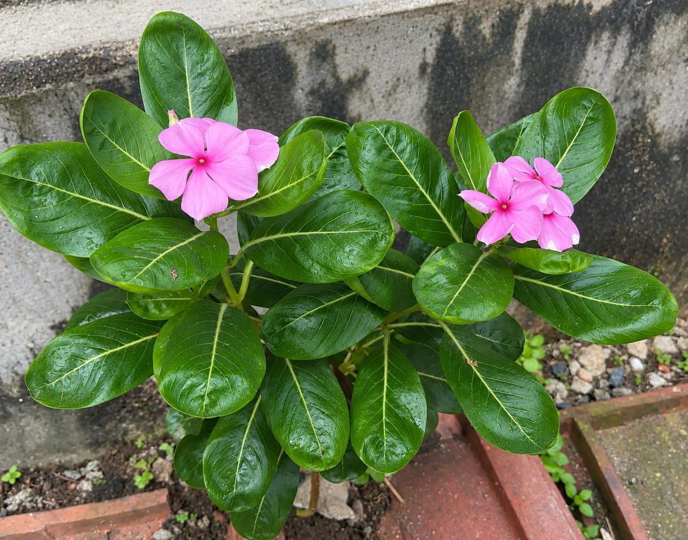
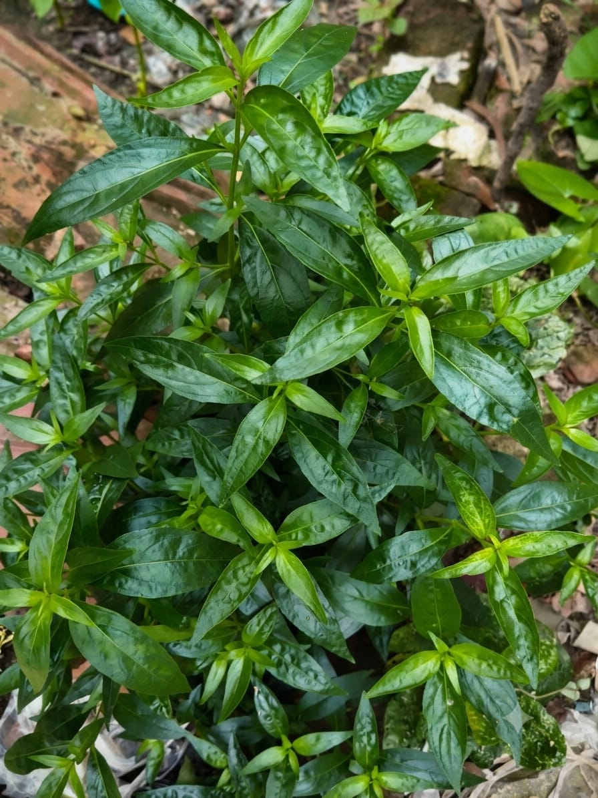
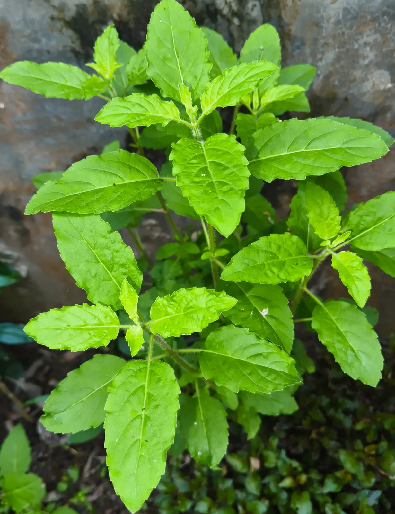
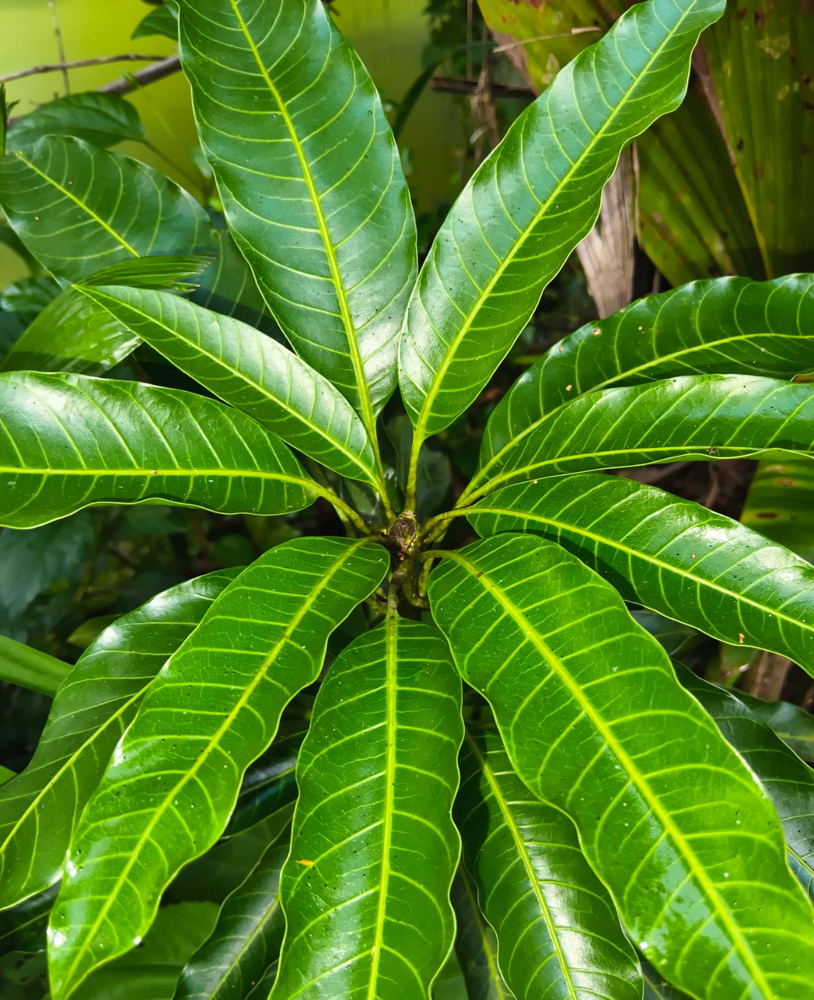
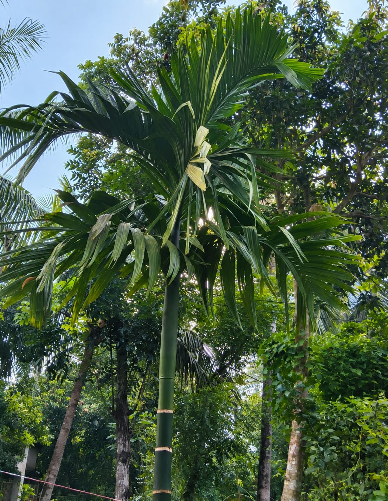

Scienticfic Name: Catharanthus
Family: Apocynaceae
Common Uses: Ornamental flower,Medicine for diabetes and blood pressure
Description: An overgreen flowering plant with bright pink and white blossoms and glossy leaves

Scientific Name: Andrographis Paniculata
Family: Acanthaceae
Common Uses: Boosting immunity,treating fever and digestive issues
Description: A small bitter herb widely used in traditional medicine for its therapeutic properties

Scientific Name: Ocimum tenuiflorum
Family: Lamiaceae
Common Uses: Used for coughs,and boosting immunity,and in religious rituals
Description: An aromatic medicinal herb with oval green leaves

Scientific Name:Mangifera indica
Family: Anacardiaceae
Common Uses: Consumed as fresh fruit or juices,with leaves used in rituals and timber for wood
Description: A large tropical evergreen tree famous for its glossy leaves and sweet fruit.

Scienticfic Name: Areca Catechu
Family: Arecaceae
Common Uses: Used for mainly for chewing as betel nut,and its wood and leaves are used for making boi-degradabel plants and fencing meterial.
Description: A tall,slender palm tree with a ringed trunk abs a canopy of feathery green leaves that produces betel nuts.